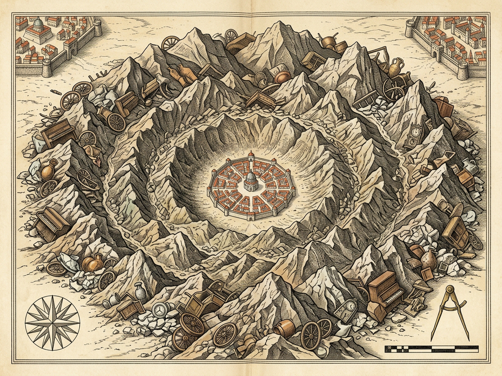
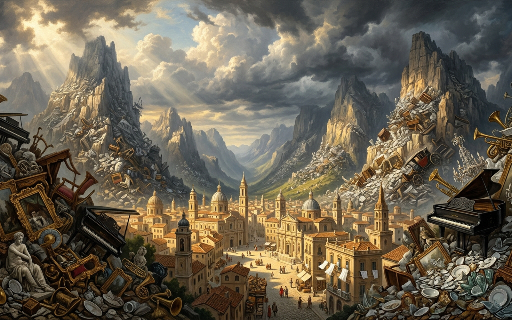

LEONIARefashioned Every Dawn · Ringed by Soldered Yesterday
DAWN I · TIER I · DECAY 0.000 t/yr
DAY 1 · CLEANSED GLEAMCREST +14.0 m · DECAY 0%SLOPE θ 21.5° / 38.0° CRIT
CRITICAL REPOSE EXCEEDED (38.0°) — Flattened tin cans, burst tires, unmated shoes & soldered pianos efface the newly dressed metropolis!
Fresh Morning SheetsDAY 1 · 0% DECAY
Every sunrise wakes between crisp uncreased sheets, just-unwrapped soap, brand-new attire, unopened tins, and latest-model radio jingles.
Morning Refashioning Core5 Fresh Rites · Joy 77%Sacerdotal Street-Cleaner RiteCurbs Cleansed · Silent WagonsBlack Plastic Bags16Exported Refuse42.0 tAngelic Wagons8 SilentIndestructible Crater Cuirass1 Soldered StratumCrater Crest+14.0 mSlope Angle θ21.5° / 38.0°Decomposition0.000 t/yrTier I: Glazed Celluloid & Crisp LinenNeighboring Cities Refuse Rollers6 Ridges ConvergingInward Vice18%Roller PressureACTIVEBurial Effaced0%ROYAL PLATESArchival Survey & Caldera Panorama

Plate I — Copperplate Stratigraphic Survey Plan (1600×1200): Gleaming radial dawn avenues ringed by soldered refuse scarps and six converging neighbor rollers.

Plate II — Caldera Panorama (1600×1000): Fresh morning linen, black curbside shrouds, silent street-cleaner wagons, and towering unburnable ramparts.